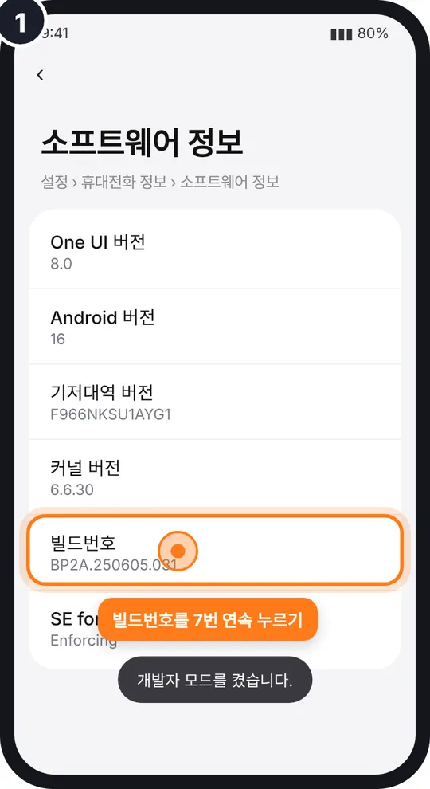
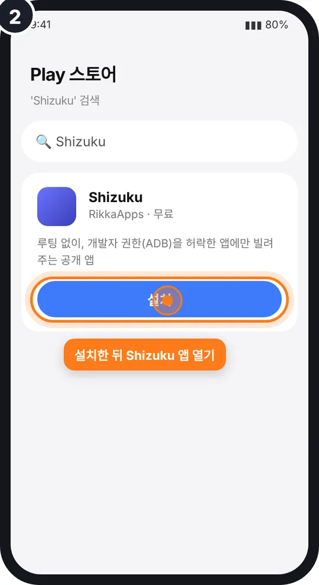
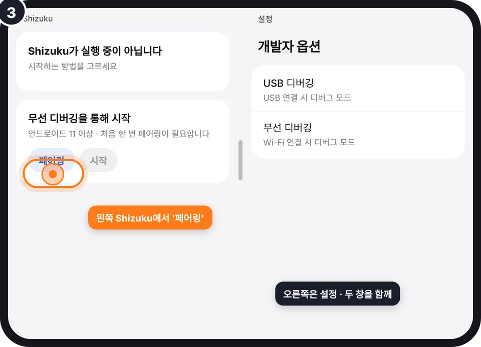
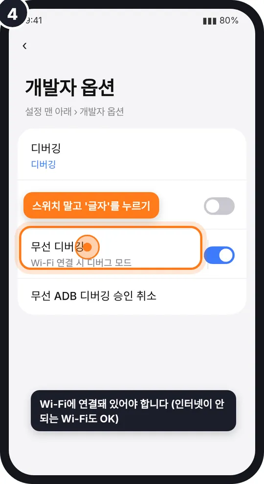
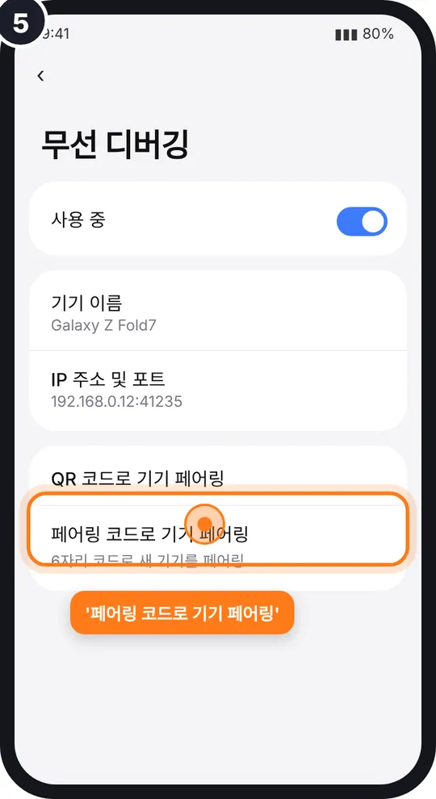
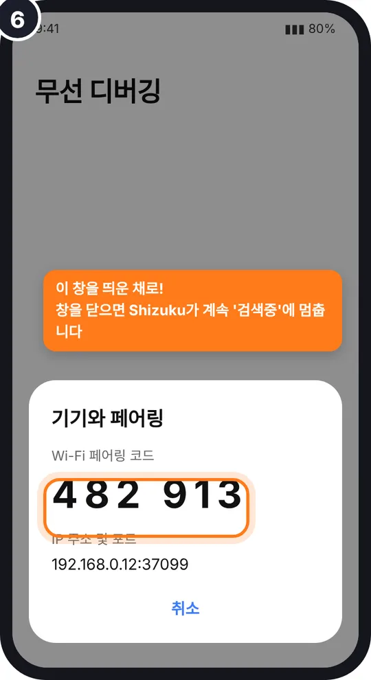
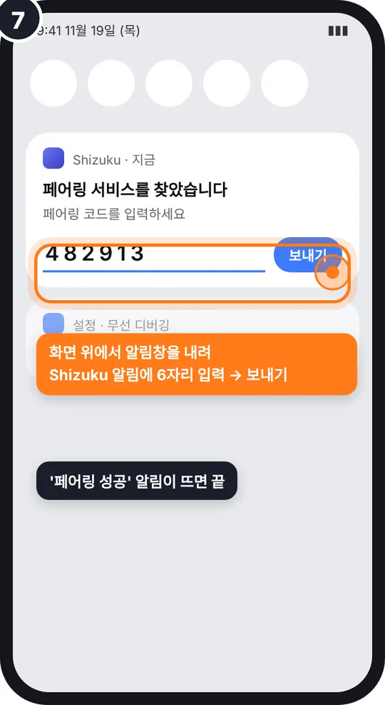
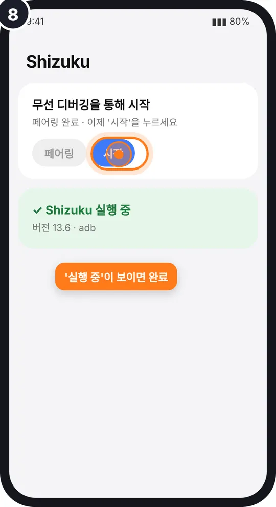
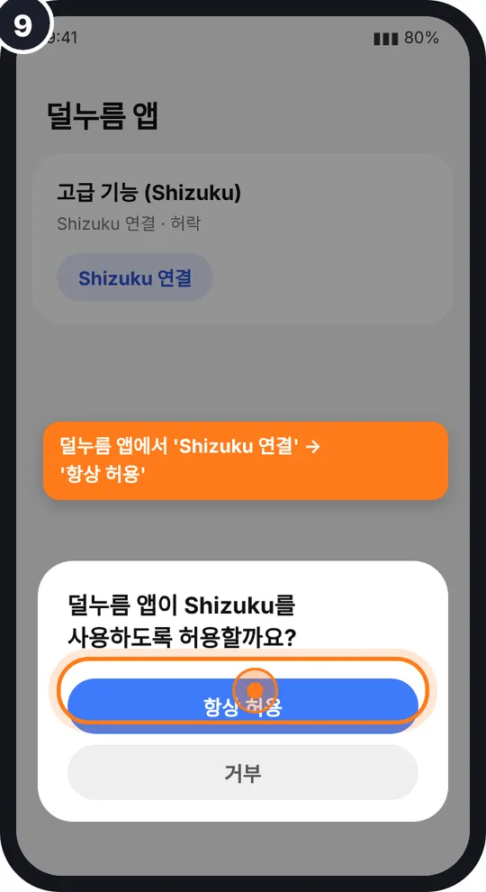
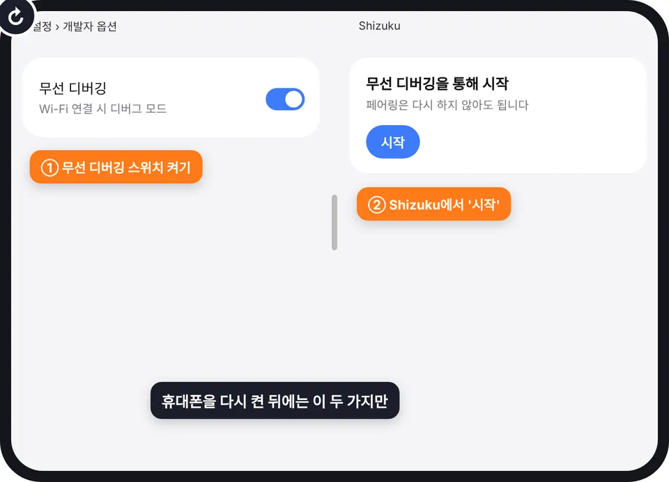

Shizuku, 처음 한 번만
5분이면 됩니다.
덜누름 앱의 고급 기능은 Shizuku라는 무료 공개 앱을 통해 동작합니다. 아래 그림을 순서대로 따라 하면 됩니다. 컴퓨터도, 루팅도 필요 없습니다.
왜 필요한가요?
안드로이드는 안전을 위해 앱끼리 서로 건드리지 못하게 막아 둡니다. 그래서 일반 앱은 다른 앱을 전체 화면으로 띄우거나, 다른 앱을 끄거나, 캐시를 지우거나, 다른 앱 화면에 리모컨 키를 넣을 수 없습니다.
이런 일은 원래 개발자가 컴퓨터에 선을 연결해 쓰는 개발자 권한(ADB)으로만 할 수 있습니다. Shizuku는 그 권한을 컴퓨터 없이 휴대폰 안에서 켜 두고, 내가 허락한 앱에만 빌려 주는 앱입니다.
- 덜누름 TV넷플릭스 등을 DeX에서 완전한 전체 화면으로 · 다른 앱을 보는 중에도 리모컨 ＋ − 위 · 아래 · 다른 앱 단추 기능(접근성) 바로 켜기
- 덜누름 게임게임 위 FPS 표시 · 게임별 맞춤 설정(FPS 상한 · 해상도 · 게임 모드) 실제 적용
- 덜누름 데스크탑앱창정리: 열린 창을 저장한 자리 · 크기로 정확히 배치
- 덜누름 PC 런처모니터 데스크톱 모드(개발자 옵션) 바로 켜기 · 다시 시작 · 창정리
- 덜씀안 쓰는 앱 완전 종료 · 모든 앱 캐시 정리 · 남은 설치 파일 정리 · 절전 모드 자동 · 화면 효과 줄이기
Shizuku가 없어도 덜누름 앱의 기본 기능은 그대로 쓸 수 있습니다. 위 기능만 동작하지 않습니다.
안전한가요?
준비
- 안드로이드 11 이상
- Wi-Fi 연결 (인터넷이 안 되는 Wi-Fi도 OK)
- 폴드라면 펼친 상태가 편해요
따라 하기

1개발자 옵션 켜기
설정 › 휴대전화 정보 › 소프트웨어 정보에서 빌드번호를 7번 연속 누릅니다. 잠금 PIN을 물으면 입력합니다.
"개발자 모드를 켰습니다"가 뜨면 설정 맨 아래에 개발자 옵션이 생깁니다.

2Shizuku 설치
Play 스토어에서 Shizuku를 검색해 설치하고 엽니다. 무료 공개 앱입니다.
Shizuku가 알림을 보내도록 허용해 주세요. 7번에서 코드를 알림에 입력합니다.

3분할 화면으로 두 앱을 함께 띄우고 '페어링'
최근 앱(|||)에서 설정 아이콘을 눌러 분할 화면으로 열기 → 다른 쪽에 Shizuku를 띄웁니다. Shizuku의 무선 디버깅을 통해 시작 › 페어링을 누릅니다.
설정과 Shizuku를 번갈아 열면 코드 창이 닫혀 버립니다. 분할 화면(또는 팝업 창)이 가장 확실합니다.

4무선 디버깅 들어가기
설정 › 개발자 옵션에서 무선 디버깅의 글자 부분을 누릅니다. 오른쪽 스위치만 켜면 안 되고, 글자를 눌러 안으로 들어가야 합니다.
"이 네트워크에서 무선 디버깅을 허용할까요?"가 뜨면 허용.

5'페어링 코드로 기기 페어링'
맨 위 사용 중이 켜져 있는지 보고, 페어링 코드로 기기 페어링을 누릅니다.

66자리 코드 창을 띄워 둔 채로
기기와 페어링 창에 6자리 코드가 나옵니다. 이 창을 닫지 마세요. 이 창이 떠 있는 동안에만 Shizuku가 페어링 상대를 찾을 수 있습니다.
Shizuku 알림이 계속 "페어링 서비스 검색중"이면, 대부분 이 창이 닫혀 있어서입니다.

7알림에 코드 입력
화면 위에서 알림창을 내리면 Shizuku 알림이 코드 입력으로 바뀌어 있습니다. 6자리를 입력하고 보냅니다.
페어링 성공 알림이 뜨면 페어링은 끝입니다. 페어링은 처음 한 번만 합니다.

8Shizuku에서 '시작'
Shizuku로 돌아가 무선 디버깅을 통해 시작 › 시작을 누릅니다. 맨 위에 Shizuku 실행 중이 보이면 됩니다.

9덜누름 앱에서 '허용'
덜누름 앱으로 돌아와 Shizuku 연결을 누르고, 뜨는 창에서 항상 허용을 누릅니다. 앱마다 한 번씩입니다.

↻휴대폰을 다시 켠 뒤에는
Shizuku는 재부팅하면 꺼집니다. 개발자 옵션 › 무선 디버깅 스위치 켜기 → Shizuku에서 시작, 이 두 가지만 하면 됩니다. 페어링과 허용은 다시 하지 않아도 됩니다.
막힐 때
알림이 "페어링 서비스 검색중"에서 멈춰요
6번의 6자리 코드 창이 닫혀 있어서입니다. 3번처럼 분할 화면으로 설정을 띄우고 페어링 코드로 기기 페어링 창을 연 채로 알림을 내려 코드를 입력하세요. 검색 알림을 지웠다면 Shizuku에서 페어링을 다시 누릅니다.
알림에 코드 입력 칸이 안 보여요
설정 › 애플리케이션 › Shizuku › 알림을 허용하세요. 알림을 길게 눌러 펼치면 입력 칸이 나오기도 합니다.
무선 디버깅이 켜지자마자 꺼져요
Wi-Fi에 연결돼 있지 않으면 꺼집니다. 아무 Wi-Fi(인터넷이 안 되는 것도 됨)에 연결한 뒤 다시 켜세요. 휴대폰 핫스팟을 켜 둔 상태에서도 쓸 수 있습니다.
설정이 막혀 있다는 창이 떠요 (자동 차단)
설정 › 보안 및 개인정보 보호 › 자동 차단이 켜져 있으면 디버깅이 막힐 수 있습니다. 연결하는 동안만 잠깐 끄고, 끝나면 다시 켜도 됩니다.
어제는 됐는데 오늘은 안 돼요
휴대폰을 다시 켰거나 Wi-Fi가 바뀌었을 수 있습니다. 맨 아래 '휴대폰을 다시 켠 뒤에는'처럼 무선 디버깅을 켜고 Shizuku에서 시작을 누르세요.
그만 쓰고 싶어요
Shizuku 앱 › 오른쪽 위 메뉴 › 중지, 또는 휴대폰을 다시 켜면 꺼집니다. 앱별 허락은 Shizuku › 권한이 부여된 앱에서 거둘 수 있습니다.
덜누름 · 그림은 이해를 돕기 위한 예시이며, 기기와 버전에 따라 글자나 위치가 조금 다를 수 있습니다. Shizuku는 RikkaApps의 무료 공개 앱입니다.